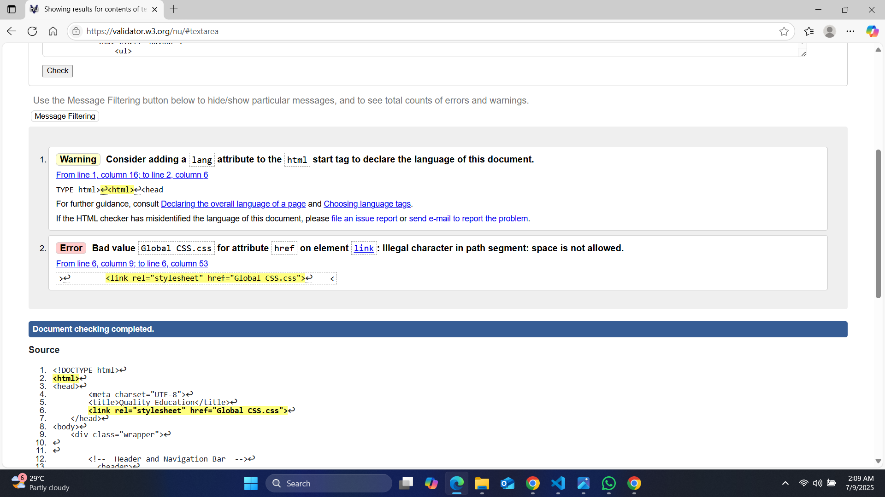
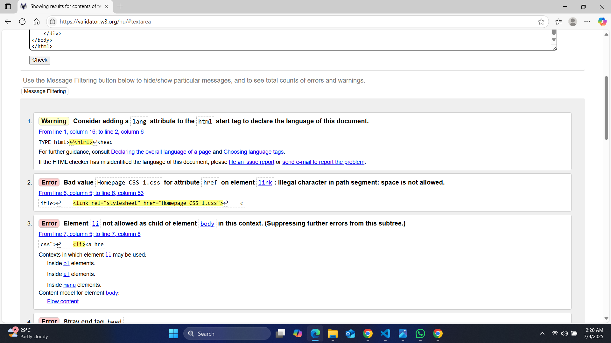
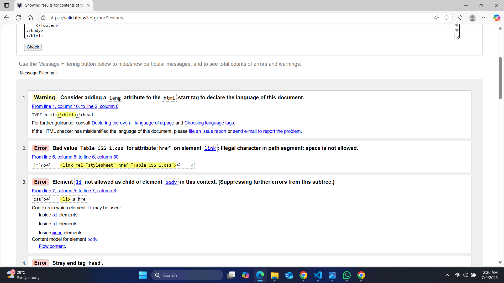
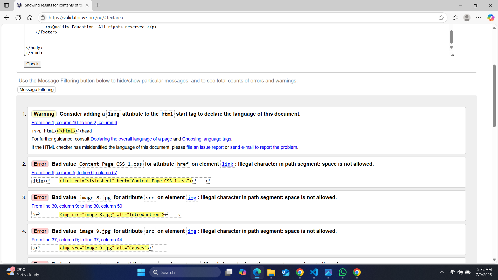

Template Page Validation Report
Template Page having a navigation bar to access the content that user want to access and footer accessibility for web pages.

Back to Page Editor page
Include a link back to the corresponding section of the Page Editor.
Home Page Validation Report
The home page giving access to all four contents and the user can easily access the content pages.

Back to Page Editor page
a link back to the corresponding section of the Page Editor.
Table Page Validation Report
Table Page is giving some important information about the aspects, description and example Quality Education around the world.

Back to Page Editor page
Include a link back to the corresponding section of the Page Editor.
Content Page Validation Report
The content page gives information, causes, effects and solutions and actions about the quality education.

Back to Page Editor page
Include a link back to the corresponding section of the Page Editor.